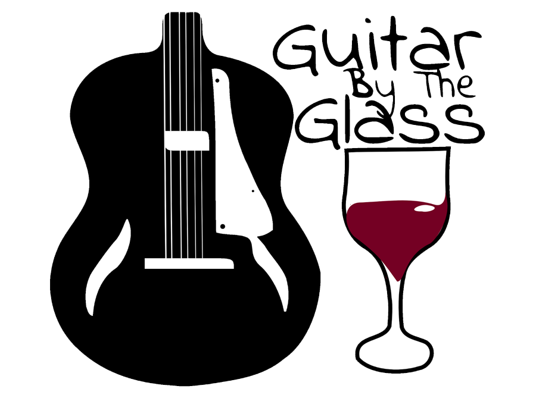

Guitar By The Glass
Group Guitar Class For Adults
I run adult guitar classes for beginner and intermediate players. I also release a fortnightly Guitar By The Glass podcast.
More information on the classes here.

